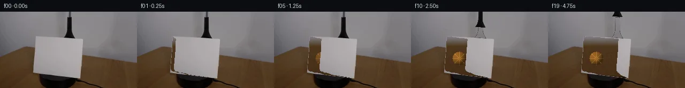

![首帧]()

Round 00
2026-11-04T20:19:10.233728+00:00像素候选变化代码 +458/−0inspection 更新
pixels 5d133cd59fd5e391 · code f8a41d16f4e4e1b0
查看本轮 generate.py 真实 diff
--- previous/generate.py
+++ current/generate.py
@@ -0,0 +1,458 @@
+"""PixelWorld-Text generation script.
+Generates 20 RGB frames (256×144) showing a cardstock rotating clockwise
+to reveal an orange tennis ball placed behind it by a grabber tool.
+"""
+
+import numpy as np
+from PIL import Image
+from pathlib import Path
+import sys
+
+# ── Configuration ──────────────────────────────────────────────────
+CASE_DIR = Path('/mnt/bn/embodied-lf3/masiyuan/physics_iq_pixel_r2_full4fps/cleanroom_runs/deepseek-v4-pro/full_matrix_v1/text/case_0006_attempt_01/workspace')
+FIRST_FRAME_PATH = CASE_DIR / 'first_frame.png'
+N_FRAMES = 20
+H, W = 144, 256
+
+# ── Load first frame ───────────────────────────────────────────────
+first = np.array(Image.open(FIRST_FRAME_PATH)).astype(np.uint8)
+assert first.shape == (H, W, 3), f"Expected (144,256,3), got {first.shape}"
+
+# ── Build cardstock mask ───────────────────────────────────────────
+# Cardstock = bright white pixels (R,G,B all > 155)
+cardstock_mask = (
+ (first[:, :, 0] > 155) &
+ (first[:, :, 1] > 155) &
+ (first[:, :, 2] > 155)
+)
+
+# Also include slightly darker cardstock edge pixels (R,G,B > 145, close to white)
+diff_rg = np.abs(first[:, :, 0].astype(int) - first[:, :, 1].astype(int))
+diff_gb = np.abs(first[:, :, 1].astype(int) - first[:, :, 2].astype(int))
+cardstock_mask = (
+ (first[:, :, 0] > 145) &
+ (first[:, :, 1] > 145) &
+ (first[:, :, 2] > 145) &
+ (diff_rg < 15) &
+ (diff_gb < 15)
+)
+
+# Find cardstock boundaries per row
+cardstock_left = np.full(H, W, dtype=int)
+cardstock_right = np.full(H, -1, dtype=int)
+for y in range(H):
+ cols = np.where(cardstock_mask[y])[0]
+ if len(cols) > 0:
+ cardstock_left[y] = cols[0]
+ cardstock_right[y] = cols[-1]
+
+# ── Build background layers ────────────────────────────────────────
+
+# 1. Background wall gradient (rows 0-47)
+# Sample the wall gradient from frame 0 (outside cardstock area)
+def build_wall_gradient(h=H, w=W):
+ """Reconstruct the smooth gray wall gradient."""
+ wall = np.zeros((h, w, 3), dtype=np.uint8)
+ for y in range(h):
+ # Interpolate from top (RGB ~140) to row 47 (RGB ~125)
+ t = min(y / 47.0, 1.0) if y <= 47 else 1.0
+ r = int(140 - 15 * t)
+ g = int(138 - 16 * t)
+ b = int(141 - 16 * t)
+ # Add subtle noise for realism
+ noise = np.random.randint(-2, 3, (w, 3)).astype(np.int16)
+ base = np.array([r, g, b], dtype=np.int16) + noise
+ wall[y] = np.clip(base, 0, 255).astype(np.uint8)
+ return wall
+
+# Use deterministic noise (seed per row)
+rng = np.random.RandomState(42)
+wall_bg = np.zeros((H, W, 3), dtype=np.uint8)
+for y in range(H):
+ t = min(y / 47.0, 1.0) if y <= 47 else 1.0
+ r = int(140 - 15 * t)
+ g = int(138 - 16 * t)
+ b = int(141 - 16 * t)
+ noise = rng.randint(-2, 3, (W, 3)).astype(np.int16)
+ base = np.array([r, g, b], dtype=np.int16) + noise
+ wall_bg[y] = np.clip(base, 0, 255).astype(np.uint8)
+
+# 2. Wood table reconstruction
+# Sample wood colors from visible areas (left of cardstock, rows 80-143)
+def build_wood_surface(h=H, w=W):
+ """Build wood table surface texture."""
+ wood = np.zeros((h, w, 3), dtype=np.uint8)
+ # Sample colors from left wood area
+ left_wood_r = first[80:143, 20:40, 0]
+ left_wood_g = first[80:143, 20:40, 1]
… diff truncated; 371 more lines …